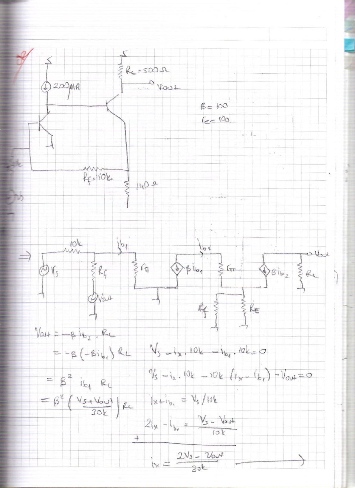
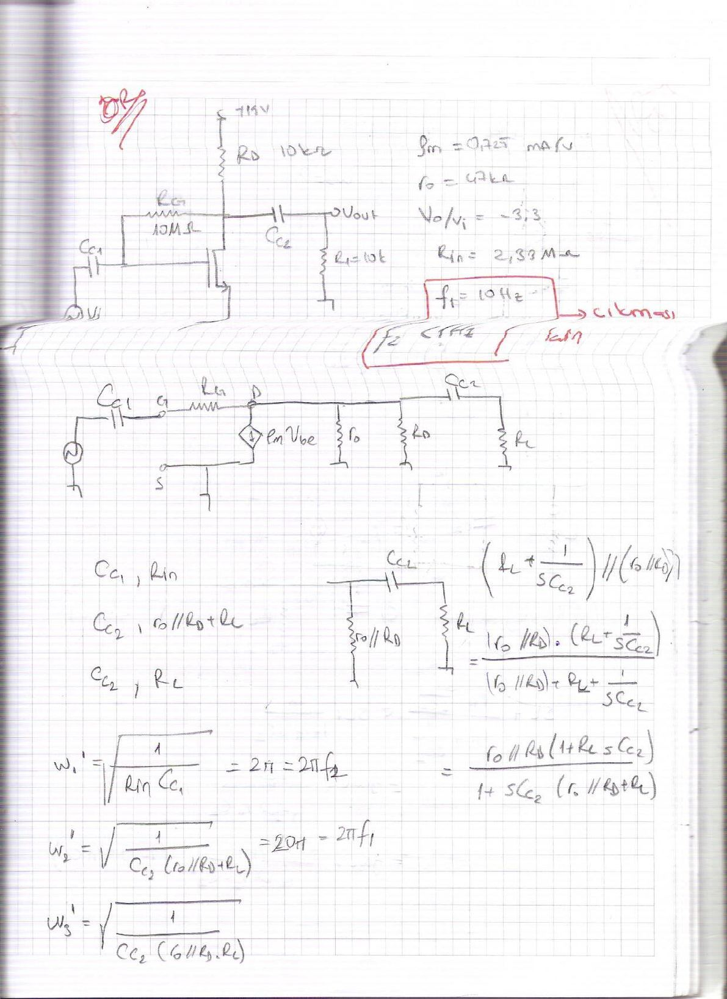
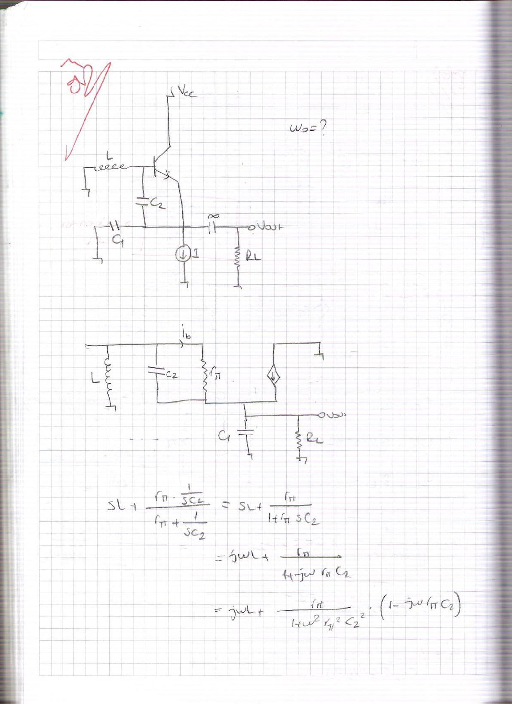
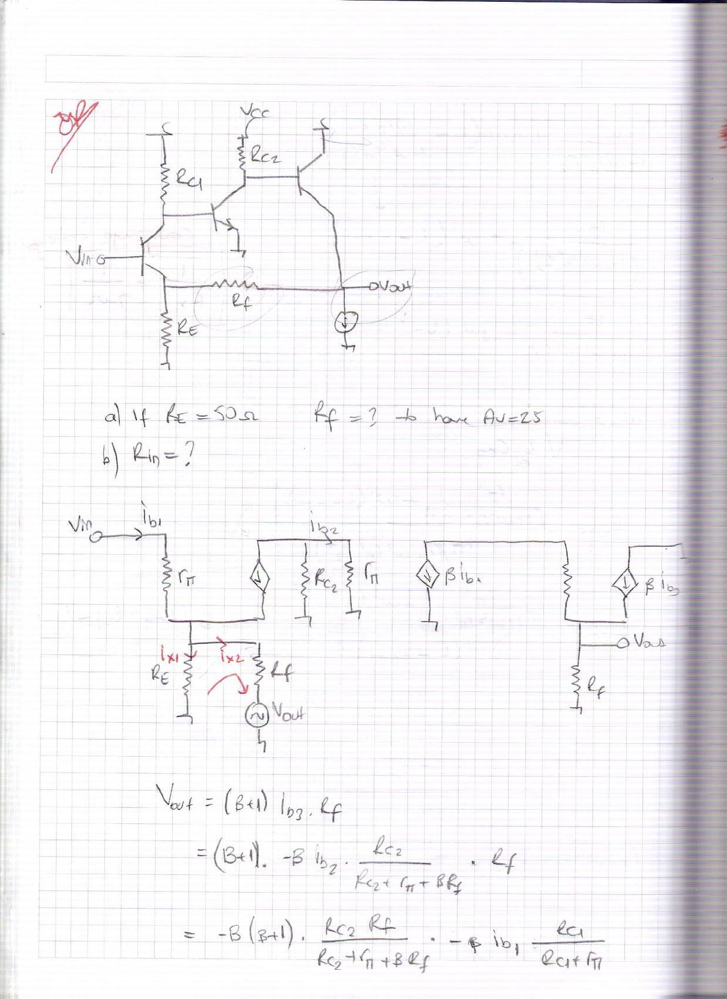

· EEM311
EEM311 Electronics II: Handwritten Study Problems (2012), Feedback Amplifiers, MOSFET Low-Frequency Response, and LC Oscillator
EEM311 – Elektronik II · 05.01.2012 · 16.10.2026
This post presents a handwritten study note from seven scanned pages, scanned on January 5, 2012. Although the files were stored in an EEM 308 folder, the topics (feedback amplifiers, frequency response, oscillators) belong to the EEM 311 Electronics II course; the date also coincides with the final exam of the fall semester. The corners of the pages have short red-pen notes such as question marks, "will be on the exam," and "try to convert"; these are most likely example problems solved before the final. It is unclear who wrote the note; there is no name or number on the pages. The headings, main formulas, and results are given below as text; all of the scanned pages can be downloaded as a PDF at the end of the post.
Problem 1: Two-transistor feedback amplifier with a current source
Circuit: The collector of the first transistor is fed by a 200 μA current source and connected to the base of the second transistor; the second transistor has R_C = 500 Ω at its collector, where V_out is taken, and 140 Ω at its emitter; a R_f = 10 kΩ feedback resistor runs from the emitter to the input. β = 100, r_e = 100 (as written in the note). In the small-signal equivalent, the source is connected to the input through 10 kΩ, and the feedback resistor R_f is modeled as a source dependent on V_out.
Solution steps in the note:
V_out = −β i_b2 R_C = −β(−β i_b1) R_C = β² i_b1 R_C
From the equations V_s − i_x·10k − i_b1·10k = 0 and V_s − i_x·10k − 10k(i_x − i_b1) − V_out = 0:
i_x = (2V_s − V_out)/30k, i_b1 = V_s/10k − (2V_s − V_out)/30k = (V_s + V_out)/30k
Substituting this expression into V_out = β² i_b1 R_C gives
A_v = (β² R_C/30k) / (1 − β² R_C/30k) = 5·10⁶ / (30·10³ − 5·10⁶) ≈ −1
For the input resistance, using a test source: R_in = V_s / i_x = V_s / (3V_s/30k) = 10 kΩ.

Note: The small-signal model used in this solution is crude; the "3V_s/30k" step in the R_in calculation is also obtained by taking V_out = −V_s in the expression i_x = (2V_s − V_out)/30k (from the result A_v ≈ −1). The results are transcribed as written in the note.
Problem 2: Lower cutoff frequencies of a MOSFET common-source amplifier
Circuit: (the supply voltage is illegible) R_D = 10 kΩ, an R_G = 10 MΩ feedback resistor from drain to gate, an input coupling capacitor C_C1, an output coupling capacitor C_C2, and a R_L = 10 kΩ load. Given: g_m = 0.725 mA/V, r_o = 47 kΩ, V_o/V_i = −3.3, R_in = 2.33 MΩ. The conditions boxed in red pen: f₁ = 10 Hz (with the note "will be on the exam" next to it) and f₂ < 1 Hz; that is, the coupling capacitors are to be chosen according to these cutoff frequencies.
Resistance seen by each capacitor using the short-circuit time constant method:
- C_C1 → R_in
- C_C2 → (r_o ∥ R_D) + R_L
Impedance at the output node: (R_L + 1/(sC_C2)) ∥ (r_o ∥ R_D) = (r_o ∥ R_D)(1 + sR_L C_C2) / (1 + sC_C2((r_o ∥ R_D) + R_L))
Cutoff frequencies:
ω₁ = 1/(R_in C_C1) = 2πf₂ and ω₂ = 1/(C_C2((r_o ∥ R_D) + R_L)) = 2π·10 = 2πf₁
Note: In the note these expressions are written under a square root (ω = √(1/(RC))); for a single-pole RC circuit the cutoff frequency is ω = 1/(RC), without the square root.

Problem 3: Oscillation frequency of an inductive BJT oscillator
Circuit: A BJT oscillator whose base is connected to ground through an inductance L, with C₂ between base and emitter and C₁ between emitter and ground, the emitter fed by a current source I, and the output taken to R_L through a large coupling capacitor (a Colpitts-like structure). Asked: ω₀ = ?
In the small-signal equivalent, the impedance of the branch formed by L, C₂, and r_π is:
sL + (r_π · 1/(sC₂)) / (r_π + 1/(sC₂)) = sL + r_π/(1 + s r_π C₂) = jωL + r_π (1 − jω r_π C₂) / (1 + ω² r_π² C₂²) = r_π/(1 + ω² r_π² C₂²) + jω (L − r_π² C₂/(1 + ω² r_π² C₂²))
This series R–L form (red note: "try to convert") is converted to the parallel equivalent, 1/(1/R_x + 1/(jωL_x)):
R_eq = [r_π²/(1 + ω² r_π² C₂²)² + ω²(L − …)²] / [r_π/(1 + ω² r_π² C₂²)]
L_eq = [r_π²/(1 + ω² r_π² C₂²)² + ω²(L − …)²] / [ω(L − …)]
Oscillation conditions: ω₀ = 1/√(L_eq C_eq) and the gain condition β(R_eq ∥ R_L) = 1 (as written in the note).

Problem 4: R_f for A_v = 25 in a three-transistor feedback amplifier
Circuit: A common-emitter first stage (R_C1, with R_E in the emitter), a common-emitter second stage (R_C2), and an emitter-follower output stage loaded by a current source; an R_f feedback resistor runs from the output to the emitter of the first stage.
- a) If R_E = 50 Ω, R_f = ? to have A_v = 25
- b) R_in = ?
The output in the note's solution:
V_out = (β + 1) i_b3 R_f = −β(β + 1) · R_C2 R_f / (R_C2 + r_π + βR_f) · i_b2, i_b2 = −β i_b1 · R_C1/(R_C1 + r_π)
For the feedback network on the input side, with currents i_x1 (through R_E) and i_x2 (through R_f):
V_in = i_b1 r_π + i_x1 R_E, i_x1 + i_x2 = (β + 1) i_b1, R_f i_x2 − R_E i_x1 = V_out
i_x2 = (V_out + (β + 1) i_b1 R_E)/(R_f + R_E), i_x1 = ((β + 1) i_b1 R_f − V_out)/(R_f + R_E)
Substituting V_out = 25 V_in, the input resistance is:
R_in = [r_π + (β + 1)R_f/(R_f + R_E)] / [1 − 25/(R_f + R_E)]
For the output resistance, i_x = i_out + i_e3 and V_out = R_f(i_out + (β + 1) i_b3) are written using the definition R_out = V_out/I_out; the calculation is not completed in the note.

Note: In the V_in expression on page 7, the R_E factor appears to be dropped in some terms (i_x1 seems to be written instead of i_x1 R_E); the R_in result is therefore dimensionally inconsistent (the 25/(R_f + R_E) term in the denominator). The correct form should be V_in = i_b1 r_π + R_E·((β + 1) i_b1 R_f − V_out)/(R_f + R_E).